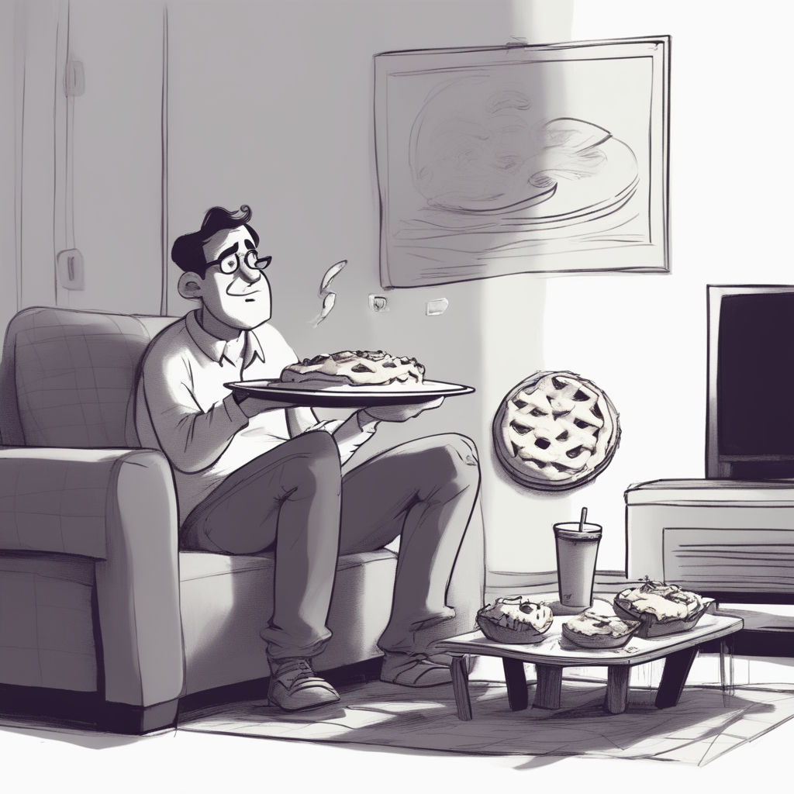

Procrastination Pie

The delectable excuse for when dessert is more urgent than deadlines!
Indulge in the Sweet Taste of Delay with Procrastination Pie! A delectable dish that's perfect for those moments when you just can't seem to get things done. Savor the flavors of excuses and distraction, baked to perfection. This pie is a guilty pleasure for the chronically procrastinating.
Ingredients:
- 1 cup of "I'll do it later" attitude
- 2 tablespoons of "One more episode won't hurt" distraction
- A pinch of "I work better under pressure" delusion
- 3 scoops of "I deserve a break" justification
- A handful of "Let me check social media first" temptation
- A generous dollop of "I'm waiting for the right moment" postponement
Instructions:
- Start by preheating your excuses to room temperature. You don't want them too hot to handle.
- Mix the "I'll do it later" attitude with the "One more episode won't hurt" distraction in a procrastinator's favorite bowl.
- Sprinkle in a pinch of "I work better under pressure" delusion for that extra flavor of self-deception.
- Gently fold in the scoops of "I deserve a break" justification and add the handful of "Let me check social media first" temptation. Be careful not to overindulge.
- Now, take your generous dollop of "I'm waiting for the right moment" postponement and spread it evenly over the mixture.
- Transfer everything to a comfy couch or bed, and let it sit for hours while you engage in activities that are not on your to-do list.
- Once you've successfully wasted time, serve your Procrastination Pie with a side of regret.
Remember, this dish is best enjoyed when you have deadlines looming and a growing list of tasks to complete. It's the ultimate excuse recipe for putting things off until tomorrow, or the day after that, or... well, you get the idea! 😉
See more AWESOME Recipes by me...